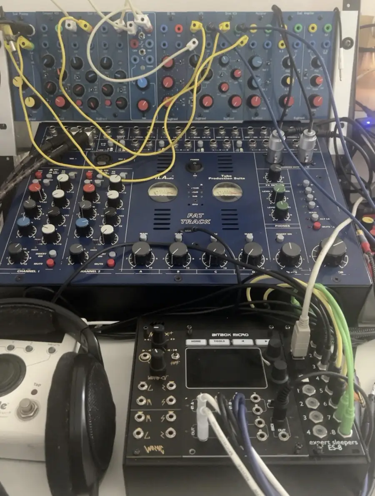
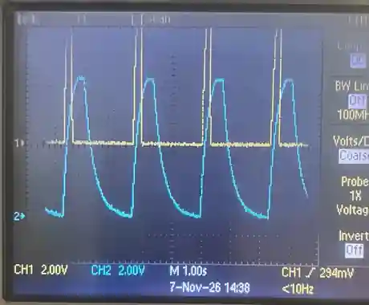
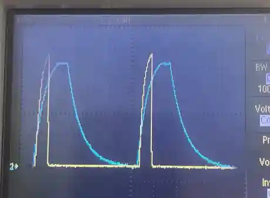
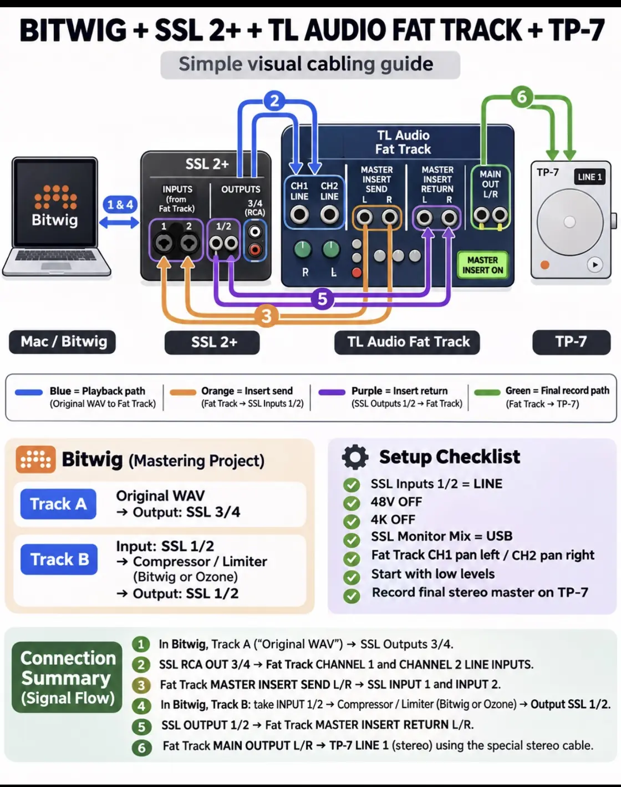

Hearing the movement
The recording begins with Drone and SubHarm from TriMicroCluster, but these are not traditional sustained drones. The heartbeat-like rhythm comes from pulses driving two slow envelopes, which shape the voices through their separate BugBrand analogue paths. Changes to the envelope response, gain and filtering affect how the notes emerge.
Opening the low-pass gate can let more of the individual notes through, briefly revealing a subtle, multi-note musical passage before the sound returns to a more blended, pulsing texture. Those changes are played as part of the performance. The voices join the TX-6 live mix, where fader movements and effects shape the stereo recording on the TP-7.

Two independently shaped voices
Both voices began in the TMC system, but their analogue paths were deliberately different.
SubHarm
In the photographed patch, the red audio cable takes SubHarm to the LPG. Its mode switch is up, selecting filter rather than filter/gate or gate. An envelope modulates the filter; opening it lets more of the underlying notes and upper harmonics become audible, changing the relationship with Drone.
Drone
Yellow audio cable in the photographed patch.
The drone enters a separate preamplifier and the Drive VCA. Its own envelope controls the VCA, giving the voice a short, sharply articulated pulse and a different dynamic movement from SubHarm.
One pulse, different motion
The heartbeat effect comes from the ENV pulses, rather than acoustic beating between Drone and SubHarm frequencies. A shared pulse drives two separate, slowly responding envelopes: one modulates the SubHarm LPG and the other controls the Drone Drive VCA. Together they create the rhythmic swell and release heard across the voices, even though each analogue path responds differently.
The result can move between a blended, heartbeat-like pulse and passages in which more notes and harmonics become audible as the SubHarm LPG filter opens. That transition is a musical gesture in its own right. The yellow and red cables identify the two audio routes in this particular patch photograph, not a colour scheme that has to be followed when repatching.
Seeing the envelopes
A Tektronix TDS 2012B oscilloscope was connected directly to the two BugBrand envelope outputs, so the traces show the slow control-voltage shapes rather than the audio waves themselves.


Drone envelope
A narrow, sharp pulse that rises quickly and drops away almost immediately. This short envelope helps give the Drive VCA path its precise articulation.
SubHarm envelope
A broader response with a short rounded top and a much longer decay. Through the LPG in filter mode it produces a more gradual change in the tonal material that passes through.
The two envelope events appeared closely aligned on the oscilloscope. No precise offset is claimed here. The blue scope trace belongs to SubHarm even though the physical audio patch cable is red: scope colours and cable colours serve different purposes.
Capturing the performance
The voices joined the wider live mix on the Teenage Engineering TX-6, where level moves and effects could be performed as the piece unfolded. The TP-7 captured the resulting stereo recording. This means the balance changes are part of the performance itself, rather than something reconstructed later from isolated stems.
A further experiment is to pass that stereo recording through the TL Audio Fat Track, using a gentle digital compressor in its master insert loop, and record the result back onto the TP-7. The aim isn't to make the music aggressively loud: it's to see whether very light processing can bring the piece together while keeping its quieter details intact.
A recording to spend time with
Coming to Bandcamp
This performance is being prepared for a Bandcamp release. When it's published, you'll be able to listen here and purchase a lossless download through Bandcamp. The intention is to offer the music for a modest price, with the option to support the work further.
The title and release details will follow the music rather than the other way round. For now, this page shares part of the process behind the recording.
For those interested in the signal flow
The following is a practical outline of the additional mastering path being explored. It sits alongside the performance notes rather than describing a step already used on the recorded piece.
Show the Bitwig / SSL 2+ / Fat Track / TP-7 mastering connections
In this proposed setup, the original stereo WAV plays from Bitwig into the TL Audio Fat Track. The Fat Track's stereo master insert sends the mix to Bitwig for compression, then receives it back before the final stereo signal is recorded onto the TP-7.

Insert send: Fat Track master SEND L/R → SSL inputs 1/2 → Bitwig compressor.
Insert return: SSL balanced outputs 1/2 → Fat Track master RETURN L/R.
Recording: Fat Track MAIN OUT L/R → stereo line input on the TP-7.
| Connection | Cable type |
|---|---|
| SSL RCA OUT 3/4 → Fat Track CH1/CH2 LINE | 2 × RCA–¼″ TS |
| Fat Track master SEND L/R → SSL INPUT 1/2 | 2 × balanced TRS |
| SSL balanced OUT 1/2 → Fat Track master RETURN L/R | 2 × balanced TRS |
| Fat Track MAIN OUT L/R → TP-7 LINE 1 | Existing dual-output-to-stereo cable |
Bitwig uses one stereo track for the original WAV (output 3/4) and a second, input-monitored stereo track for compression (input and output 1/2). SSL direct monitoring is disabled for the loop. Levels and the final recorded true peaks still need to be checked before any release master is approved.
The analogue voice patch above is drawn from the artist's performance notes. The extra hybrid mastering route is an experiment under consideration, not a claim about how this particular recording was already mastered.